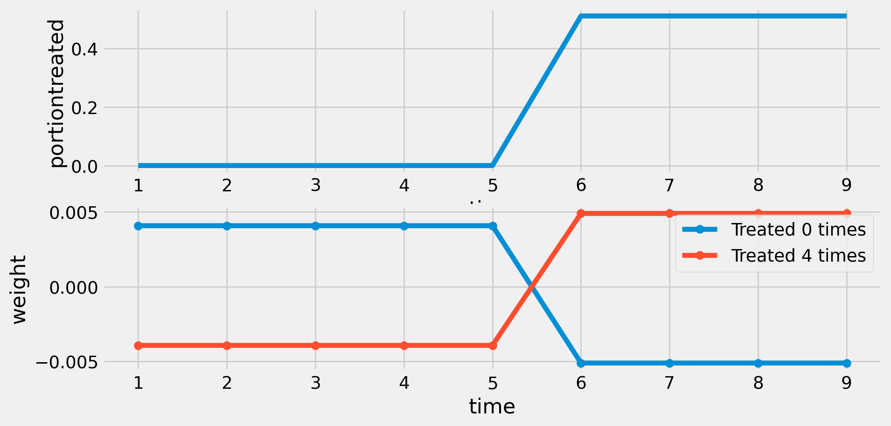
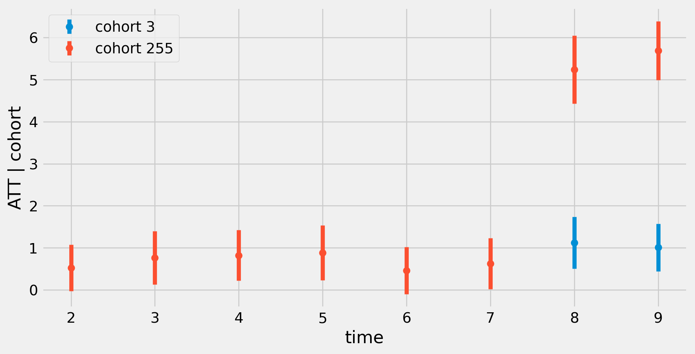
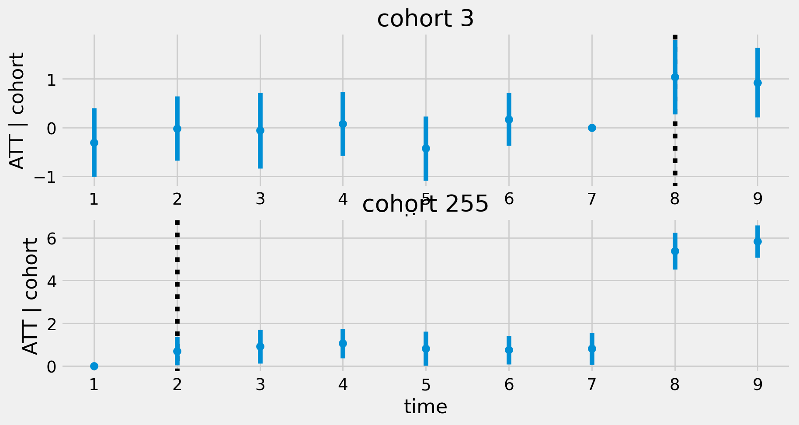

ECON526
University of British Columbia
\[ \def\Er{{\mathrm{E}}} \def\En{{\mathbb{E}_n}} \def\cov{{\mathrm{Cov}}} \def\var{{\mathrm{Var}}} \def\R{{\mathbb{R}}} \newcommand\norm[1]{\left\lVert#1\right\rVert} \def\rank{{\mathrm{rank}}} \newcommand{\inpr}{ \overset{p^*_{\scriptscriptstyle n}}{\longrightarrow}} \def\inprob{{\,{\buildrel p \over \rightarrow}\,}} \def\indist{\,{\buildrel d \over \rightarrow}\,} \DeclareMathOperator*{\plim}{plim} \]
Same logic as before, \[ \begin{align*} ATT_{t,t-s} & = \Er[y_{it}(1) - \color{red}{y_{it}(0)} | D_{it} = 1, D_{it-s}=0] \\ & = \Er[y_{it}(1) - y_{it-s}(0) | D_{it} = 1, D_{it-s}=0] - \\ & \;\; - \Er[\color{red}{y_{it}(0)} - y_{t-s}(0) | D_{it}=1, D_{it-s}=0] \end{align*} \]
\[ \begin{align*} ATT_{t,t-s}& = \Er[y_{it} - y_{it-s} | D_{it}=1, D_{it-s}=0] - \Er[y_{it} - y_{it-s} | D_{it}=0, D_{it-s}=0] \end{align*} \] - Similarly, can identify various other interpretable average treatment effects conditional on being treated at some times and not others
Plugin
Fixed effects? \[ y_{it} = \beta D_{it} + \alpha_i + \delta_t + \epsilon_{it} \] When will \(\hat{\beta}^{FE}\) consistently estimate some interpretable conditional average of treatment effects?
def assigntreat(n, T, portiontreated):
treated = np.zeros((n, T), dtype=bool)
for t in range(1, T):
treated[:, t] = treated[:, t - 1]
if portiontreated[t] > 0:
treated[:, t] = np.logical_or(treated[:, t-1], np.random.rand(n) < portiontreated[t])
return treated
def weights(D):
D̈ = D - np.mean(D, axis=0) - np.mean(D, axis=1)[:, np.newaxis] + np.mean(D)
ω = D̈ / np.sum(D̈**2)
return ω
n = 100
T = 9
pt = np.zeros(T)
pt[T//2 + 1] = 0.5
D = assigntreat(n, T,pt)
y = np.random.randn(n, T)
weighted_sum = np.sum(y * weights(D))
print(weighted_sum)0.08147854863434313# check that it matches fixed effect estimate from a package
import pyfixest as pf
df = pd.DataFrame({
'id': np.repeat(np.arange(1, n + 1), T),
't': np.tile(np.arange(1, T + 1), n),
'y': y.flatten(),
'D': D.flatten()
})
result=pf.feols('y ~ D | id + t', df, vcov={"CRV1": "id"})
result.summary()###
Estimation: OLS
Dep. var.: y, Fixed effects: id+t
Inference: CRV1
Observations: 900
| Coefficient | Estimate | Std. Error | t value | Pr(>|t|) | 2.5% | 97.5% |
|:--------------|-----------:|-------------:|----------:|-----------:|-------:|--------:|
| D | 0.081 | 0.133 | 0.610 | 0.543 | -0.183 | 0.346 |
---
RMSE: 0.953 R2: 0.109 R2 Within: 0.0 def plotD(D,ax):
n, T = D.shape
ax.set(xlabel='time',ylabel='portiontreated')
ax.plot(range(1,T+1),D.mean(axis=0))
ax
def plotweights(D, ax):
n, T = D.shape
ω = weights(D)
groups = np.unique(D, axis=0)
ax.set(xlabel='time', ylabel='weight')
for g in groups:
i = np.where(np.all(D == g, axis=1))[0][0]
wt = ω[i, :]
ax.plot(range(1, T+1), wt, marker='o', label=f'Treated {np.sum(g)} times')
ax.legend()
ax
def plotwd(D):
fig, ax = plt.subplots(2,1)
ax[0]=plotD(D,ax[0])
ax[1]=plotweights(D,ax[1])
plt.show()
plotwd(D)
dvals = np.unique(D,axis=0)
dvals.sort()
ATT = np.ones(T)
ATT[0] = 0.0
ATT[T-2:T] = 6.0
np.random.seed(6798)
def simulate(n,T,pt,ATT,sigma=1.0):
D = assigntreat(n,T,pt)
y = np.random.randn(n,T)*sigma + ATT[np.cumsum(D, axis=1)]
df = pd.DataFrame({
'id': np.repeat(np.arange(1, n + 1), T),
't': np.tile(np.arange(1, T + 1), n),
'y': y.flatten(),
'D': D.flatten()
})
return(df)
df = simulate(n,T,pt,ATT)
result = pf.feols('y ~ D | id + t', df, vcov={"CRV1": "id"})
result.summary()###
Estimation: OLS
Dep. var.: y, Fixed effects: id+t
Inference: CRV1
Observations: 900
| Coefficient | Estimate | Std. Error | t value | Pr(>|t|) | 2.5% | 97.5% |
|:--------------|-----------:|-------------:|----------:|-----------:|-------:|--------:|
| D | -0.526 | 0.249 | -2.107 | 0.038 | -1.020 | -0.031 |
---
RMSE: 1.287 R2: 0.51 R2 Within: 0.009 Option 2: estimate a correctly specified fixed effects regression (my preferred approach)
Problem is possible correlation of \((y_{it}(1) - y_{it}(0))D_{it}\) with \(\tilde{D}_{it}\)
\(\tilde{D}_{it}\) is function of \(t\) and \((D_{i1}, ..., D_{iT})\)
Estimating separate coefficient for each combination of \(t\) and \((D_{i1}, ..., D_{iT})\) will eliminate correlation / flexibly model treatment effect heterogeneity
Estimate: \[ y_{it} = \sum_{c=1}^C D_{it} 1\{C_i=c\} \beta_{ct} + \alpha_i + \delta_t + \epsilon_{it} \]
\(\hat{\beta}_{ct}\) consistently estimates \(\Er[y_{it}(1) - y_{it}(0) | C_{i}=c, D_{it}=1]\) assuming parallel trends holds for all periods \[ \Er[y_{it}(0) - y_{it-s}(0) | C_i=c] = \Er[y_{it}(0) - y_{it-s}(0) | C_i=c'] \] for all \(t, s, c, c'\)
def definecohort(df):
# convert dummies into categorical
n = len(df.id.unique())
T = len(df.t.unique())
df = df.set_index(['id','t'])
dmat=np.array(df.sort_index().D)
dmat=np.array(df.D).reshape(n,T)
cohort=dmat.dot(1 << np.arange(dmat.shape[-1] - 1, -1, -1))
cdf = pd.DataFrame({"id":np.array(df.index.levels[0]), "cohort":pd.Categorical(cohort)})
cdf =cdf.set_index('id')
df = df.reset_index().set_index('id')
df=pd.merge(df, cdf, left_index=True, right_index=True)
df=df.reset_index()
return(df)
dfc = definecohort(df)
def defineinteractions(df):
df['dct'] = 'untreated'
df['dct'] = df.apply(lambda x: f"t{x['t']},c{x['cohort']}" if x['D'] else f"untreated", axis=1)
return(df)
dfc = defineinteractions(dfc)
modc = pf.feols("y ~ C(dct, Treatment('untreated')) | id + t", dfc, vcov={"CRV1": "id"})
pf.etable([modc], type="md")index est1
----------------------------------------- ---------
depvar y
----------------------------------------------------
C(dct, Treatment('untreated'))[T.t2,c255] 0.524
(0.277)
C(dct, Treatment('untreated'))[T.t3,c255] 0.761*
(0.320)
C(dct, Treatment('untreated'))[T.t4,c255] 0.820**
(0.304)
C(dct, Treatment('untreated'))[T.t5,c255] 0.880**
(0.329)
C(dct, Treatment('untreated'))[T.t6,c255] 0.458
(0.285)
C(dct, Treatment('untreated'))[T.t7,c255] 0.624*
(0.307)
C(dct, Treatment('untreated'))[T.t8,c255] 5.242***
(0.408)
C(dct, Treatment('untreated'))[T.t8,c3] 1.121***
(0.311)
C(dct, Treatment('untreated'))[T.t9,c255] 5.693***
(0.354)
C(dct, Treatment('untreated'))[T.t9,c3] 1.007***
(0.286)
----------------------------------------------------
t x
id x
----------------------------------------------------
Observations 900
S.E. type by: id
R2 0.724
----------------------------------------------------
import re
def plotcohortatt(modc):
coef = modc.coef()
ci = modc.confint()
tcregex = re.compile(r".+t(\d+),c(\d+)]")
catt = pd.DataFrame(index=coef.index, columns=['t','c','att','yerr'])
for i in range(len(coef)):
m = tcregex.match(coef.index[i])
t,c = m.groups()
t=int(t)
c=int(c)
catt.loc[coef.index[i]] = [t,c,coef.iloc[i],np.abs(ci.iloc[i][0]-coef.iloc[i])]
catt.sort_values(['c','t'],inplace=True)
fig, ax = plt.subplots()
ax.set(xlabel='time', ylabel='ATT | cohort')
for g in catt.groupby('c') :
c = g[0]
g = g[1]
ax.errorbar(g['t'], g['att'], yerr=g['yerr'], fmt='o', label=f'cohort {c}')
ax.legend()
return(fig)
fig=plotcohortatt(modc)
If just want to assume parallel trends for treated and never treated, i.e. \[ \Er[y_{it}(0) - y_{it-s}(0) | C_i=c] = \Er[y_{it}(0) - y_{it-s}(0) | C_i=c'] \] when \(c\) treated at \(t\), untreated at \(t-s\) and \(c'\) never treated
Estimate \[ y_{it} = \sum_{c=1}^C 1\{C_i=c\} \delta_{c,t} + \alpha_i + \epsilon_{it} \]
\[ y_{it} = \sum_{c=1}^C 1\{C_i=c\} \delta_{c,t} + \alpha_i + \epsilon_{it} \]
index est1
-------------------------- ---------
depvar y
-------------------------------------
C(cohort)[T.3]:C(t)[T.2] 0.288
(0.355)
C(cohort)[T.255]:C(t)[T.2] 0.696*
(0.338)
C(cohort)[T.3]:C(t)[T.3] 0.248
(0.404)
C(cohort)[T.255]:C(t)[T.3] 0.909*
(0.404)
C(cohort)[T.3]:C(t)[T.4] 0.386
(0.343)
C(cohort)[T.255]:C(t)[T.4] 1.051**
(0.350)
C(cohort)[T.3]:C(t)[T.5] -0.119
(0.375)
C(cohort)[T.255]:C(t)[T.5] 0.809*
(0.405)
C(cohort)[T.3]:C(t)[T.6] 0.480
(0.291)
C(cohort)[T.255]:C(t)[T.6] 0.745*
(0.338)
C(cohort)[T.3]:C(t)[T.7] 0.309
(0.360)
C(cohort)[T.255]:C(t)[T.7] 0.808*
(0.382)
C(cohort)[T.3]:C(t)[T.8] 1.349**
(0.398)
C(cohort)[T.255]:C(t)[T.8] 5.378***
(0.438)
C(cohort)[T.3]:C(t)[T.9] 1.235**
(0.383)
C(cohort)[T.255]:C(t)[T.9] 5.829***
(0.383)
-------------------------------------
t x
id x
-------------------------------------
Observations 900
S.E. type by: id
R2 0.725
-------------------------------------
\[ \Er[\color{red}{y_{it}(0)} - y_{it-s}(0) | D_{it}=1, D_{it-s}=0] = \Er[y_{it}(0) - y_{it-s}(0) | D_{it}=0, D_{it-s}=0] \]
\[ \begin{align*} & \Er[y_{it-r}(0) - y_{it-s}(0) | D_{it}=1, D_{it-r}=0, D_{it-s}=0] = \\ & = \Er[y_{it-r}(0) - y_{it-s}(0) | D_{it}=0, D_{it-r}=0, D_{it-s}=0] \end{align*} \]
def eventstudyplot(modct) :
evdf = pd.DataFrame(index=modct.coef().index, columns=['c', 't','delta','did','se','vindex'])
pattern=r".+T\.(\d+).+\[T\.(\d+)\]"
for i in range(len(modct.coef())):
m = re.match(pattern, modct.coef().index[i])
c,t = m.groups()
t = int(t)
c = int(c)
evdf.loc[modct.coef().index[i]] = [c,t,modct.coef().iloc[i],0, 0, i]
evdf.sort_values(['c','t'],inplace=True)
T = evdf['t'].max()
V = modct._vcov
evdf.reset_index(inplace=True)
for t in range(T) :
if not (t+1) in evdf.t.unique() :
ndf = pd.DataFrame(columns=evdf.columns)
ndf.c=evdf.c.unique()
ndf.t=t+1
ndf.delta=0
ndf.vindex=V.shape[0]
evdf=pd.concat([evdf,ndf])
V = np.vstack([V,np.zeros(V.shape[1])])
V = np.hstack([V,np.zeros((V.shape[0],1))])
def did(g) :
c = g.c.unique()[0]
timestreated = bin(c).count('1')
t0 = T - timestreated
g=g.set_index('t')
g['did'] = g['delta'] - g['delta'][t0]
vi = g['vindex'].to_numpy().astype(int)
g['se'] = np.sqrt(V[vi,vi] - 2*V[g['vindex'][t0],vi] + V[g['vindex'][t0],g['vindex'][t0]])
return(g)
evdf=evdf.groupby('c').apply(did).drop(columns='c').reset_index()
fig, ax = plt.subplots(len(evdf.c.unique()),1)
for (i,g) in enumerate(evdf.groupby('c')) :
c = g[0]
g = g[1]
timestreated = bin(c).count('1')
t0 = T - timestreated + 1
ax[i].axvline(t0, color='black', ls=":")
ax[i].errorbar(g['t'], g['did'], yerr=1.96*g['se'], fmt='o', label=f'cohort {c}')
ax[i].set_title(f'cohort {c}')
ax[i].set(xlabel='time', ylabel='ATT | cohort')
return(fig)
fig=eventstudyplot(modct)
\[ \begin{align*} H_0 : & \Er[y_{it-r} - y_{it-s} | D_{it}=1, D_{it-r}=0, D_{it-s}=0] = \\ & = \Er[y_{it-r} - y_{it-s} | D_{it}=0, D_{it-r}=0, D_{it-s}=0]? \end{align*} \] - Even if not testing formally, we do it informally by plotting
Distribution of \(\hat{ATT}\) conditional on fail to reject parallel pre-trends is not normal
Roth (2022) : test can have low power, and in plausible violations, \(\widehat{ATT}_{3,2}\) conditional on failing to reject is biased
Let \(\Delta\) be violation of parallel trends \[ \Delta = \Er[\color{red}{y_{it}(0)} - y_{it-1}(0) | D_{it}=1, D_{it-1}=0] - \Er[y_{it}(0) - y_{it-1}(0) | D_{it}=0, D_{it-1}=0] \]
Assume \(\Delta\) is bounded by deviation from parallel of pre-trends \[ |\Delta| \leq M \max_{r} \left\vert \tau^{1t}_{t-r,t-r-1} - \tau^{0t}_{t-r,t-r-1} \right\vert \] for some chosen \(M\)
See Rambachan and Roth (2023)